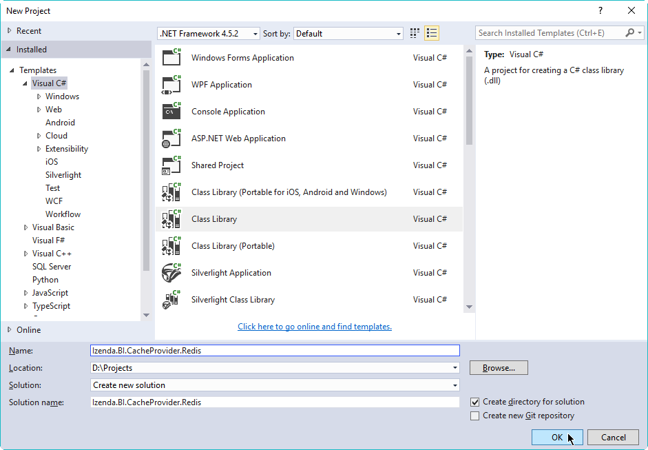
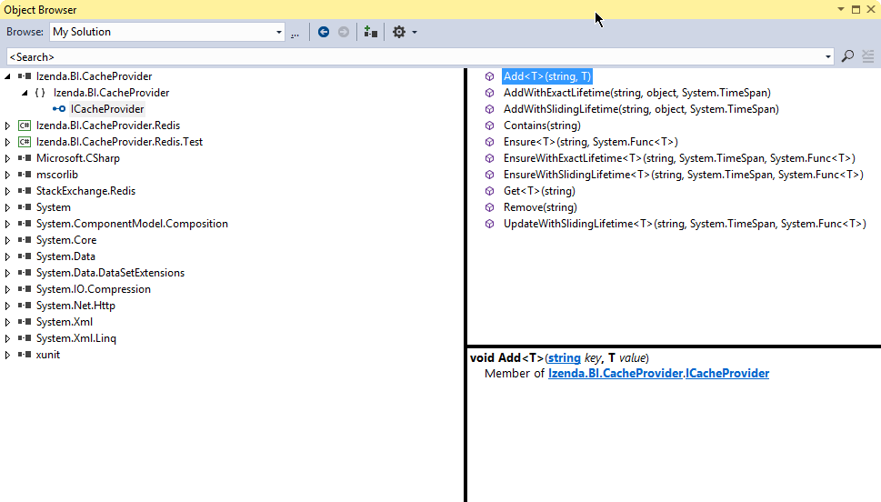

ICacheProvider - Redis Sample¶
Izenda applies caching to improve user responsiveness and reduce resource usage. The built-in library uses an in-memory cache which works best for typical usage scenarios.
For specific needs, this feature can easily be integrated with other
caching systems, via the ICacheProvider interface.
In this sample, we will use Redis as an alternative cache server - there is no intentional comparison between the built-in cache and Redis here, we just pick Redis as an example.
Summary of the Steps
- Reference the interface library Izenda.BI.CacheProvider.dll in our code base.
- Provide our own implementation of the ICacheProvider interface.
- Unit test the implementation.
- Replace the built-in caching library file Izenda.BI.CacheProvider.Memcache.dll with our own library file.
Note
Please refer to our GitHub repo for the latest code samples: https://github.com/Izenda7Series/RedisCacheProvider
Preparation¶
Redis test server setup
Download, extract and compile the server from http://redis.io/download.
For Windows, there are binary builds available at https://github.com/MSOpenTech/redis/releases.
Start the server using this command in terminal:
src/redis-serverStart the client in another terminal to check our server:
$ src/redis-cli redis> set foo bar OK redis> get foo "bar"
Redis client library
- We will use the StackExchange.Redis library.
- We will install it from within Visual Studio in the following step.
ICacheProvider Implementation¶
Reference ICacheProvider Interface in a New Project¶
Create a new Class Library project in Visual Studio.
Name it Izenda.BI.CacheProvider.Redis.
Select a location (e.g. D:\Projects).
Select to create new solution.
Give the solution name Izenda.BI.RedisCache.
Tick the Create directory for solution check-box.
Click OK to create the project and solution.
Fig. 425 New Project
Copy the interface library file Izenda.BI.CacheProvider.dll from Izenda installation folder into the newly-created folder D:\Projects\Izenda.BI.RedisCache\Izenda.BI.CacheProvider.Redis.
Open Solution Explorer, right-click References in project Izenda.BI.CacheProvider.Redis and select Add Reference.
In Reference Manager pop-up, click Browse and select the file Izenda.BI.CacheProvider.dll (in D:\Projects\Izenda.BI.RedisCache\Izenda.BI.CacheProvider.Redis).
Click OK to close Reference Manager pop-up.
Verify the interface by double-clicking Izenda.BI.CacheProvider in References to open Object Browser.
Expand the nodes and select ICacheProvider to see this list of methods to implement.
Fig. 426 ICacheProvider Interface
Reference StackExchange.Redis Client Library¶
- Open NuGet Package Manager pop-up from Tools > NuGet Package Manager > Manage NuGet Packages for Solution...
- Click Browse tab and enter StackExchange.Redis in the text box to search.
- Select StackExchange.Redis on the left and tick the Izenda.BI.CacheProvider.Redis project check-box on the right.
- Select Latest stable 1.1.608 (at the time of writing) and click Install.
- Verify that StackExchange.Redis is shown in the References list in Solution Explorer.
Implement the ICacheProvider Interface¶
- Right-click the default Class1.cs file in Solution Explorer and rename it to RedisCacheProvider.cs, also agree to change the class name to RedisCacheProvider when asked.
- Implement the methods of the interface using StackExchange.Redis APIs.
- Reference the namespace System.ComponentModel.Composition if necessary (Add Reference and tick System.ComponentModel.Composition in Assemblies > Framework).
Full sample code with method implementations: RedisCacheProvider.cs
Note
The Redis server address is assumed to be “localhost” in this sample. It should be read from the configuration file in an actual code.
Note
If using a previous verison, please use a workaround similar to this:
private static ConcurrentDictionary<string, object> _mem = new ConcurrentDictionary<string, object>();
private bool IsInMemoryCache(string key, Type type)
{
return (type.IsGenericType && type.GenericTypeArguments.Any(t => t == typeof(Object)))
|| type.FullName.StartsWith("Izenda.BI.DataAdaptor.IDataSourceAdaptor")
|| type.FullName.StartsWith("Izenda.BI.Logging.ILogManager")
|| type.FullName.StartsWith("Izenda.BI.DataAdaptor.IDataSourceAdaptor");
}
public void Add<T>(string key, T value)
{
if(IsInMemoryCache(key, typeof(T)))
{
_mem.AddOrUpdate(key, value, (existingKey, oldValue) => value);
}
else
{
// Serialize, and add to redis (custom) cache
}
}
public T Get<T>(string key)
{
if (IsInMemoryCache(key, typeof(T)))
{
object value;
_mem.TryGetValue(key, out value);
return (T)value;
}
else
{
// Get from redis (custom) cache, and deserialize
}
}
Add UnitTest Project¶
- Rick click Solution ‘Izenda.BI.RedisCache’ in Solution Explorer and select Add > New Project.
- Add a Class Library project named Izenda.BI.CacheProvider.Redis.Test.
- Reference the project Izenda.BI.CacheProvider.Redis (Add Reference and tick Izenda.BI.CacheProvider.Redis in Projects > Solution).
- Reference xUnit Library.
- Open NuGet Package Manager pop-up from Tools > NuGet Package Manager > Manage NuGet Packages for Solution...
- Click Browse tab and enter xunit in the text box to search.
- Select xunit on the left and tick the Izenda.BI.CacheProvider.Redis.Test project check-box on the right.
- Select version 1.9.1 (working at the time of writing) and click Install.
- Similarly install xunit.runner.visualstudio version 2.1.0 to Izenda.BI.CacheProvider.Redis.Test project.
Implement the Tests¶
- Right-click the default Class1.cs file in Solution Explorer and rename it to RedisCacheProviderTest.cs, also agree to change the class name to RedisCacheProviderTest when asked.
- Implement the tests in xUnit.
Full sample code with implemented test: RedisCacheProviderTest.cs
Run the UnitTests¶
Open Test Explorer from Menu > Test > Windows.
Click Run All in Test Explorer.
(Remember to start the Redis server before testing)
All the tests should be passed.
Fig. 427 Test Explorer Result
Replace the Built-in Caching Library¶
In the installation folder, find the built-in caching library file Izenda.BI.CacheProvider.Memcache.dll and rename to Izenda.BI.CacheProvider.Memcache.dll.unused.
Copy the new caching library file Izenda.BI.CacheProvider.Redis.dll and StackExchange.Redis.dll to the folder (they can be found at D:\Projects\Izenda.BI.RedisCache\Izenda.BI.CacheProvider.Redis\bin\Debug\).
Restart the system for the DLL to be loaded.
Use the system for a while then open the Redis client in terminal to check our cache:
$ src/redis-cli redis> keys *